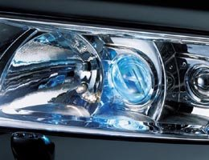

Автомобильные фары в вечернее и ночное время это как глаза для человека. Все завист от их состояния. Правильная регулировка пучка света обеспечит хорошее освещение дорожного полотна, а следовательно водителем будет вовремя замечено препятствие и предприняты правильные действия. А не правильная регулировка может привести к ослеплению других участников дорожного движения, что в свою очередь может привести к непредсказуемым последствиям. Правильный подобр лампы для фар головного света, тоже играет не маловажную роль, так как некачественные или не предназначенные для фар именно Вашего автомобиля лампы могут не только ослепить водителей других автомобилей на дороге, но и нанести серьезный урон корпусу фар и проводке, могут привести к короткому замыканию, в простонародье называемое "козой". Как говорится в электричестве всего две неисправности:
1 - есть контакт там, где ненадо
2 - и нет контакта там, где надо.
Поверьте, отыскать и определить где и какая неисправность произошла достаточно тяжело, поэтому заменить отдельно кусок провода практически не возможно, приходится менять целый жгут проводов. В современных автомобилях присутствует море электронных устройств, которые все зависят друг от друга и порой приходится заменять их. Теперь можно представить себе примерные затраты от применения каких-то "крутых" ламп, хорошо если отечественный автомобиль, можно найти провода, сгоревшие электронные блоки, а если иномарка..., тут придется попотеть особенно в поисках оригинальных электронных блоков, а от сюда и более высокие материальные затраты.
Можно привести пример даже не из автомобильной тематики. Купил человек клевый, крутой, качественный импортный телевизор, плазма фирмы NNNN (сами себе представьте какой фирмы это сейчас не имеет особого значения). Проработала техника весь гарантийный срок отлично без претензий. Но в один прекрасный момент перестал показывать, только говорит. Ну и за чем нужен такой весьма не дешевый радиоприемник. Обратился наш товарищ в ремонтную мастерскую, встретили его там с распростертыми объятьями, посчитали сколько будет стоить ремонт и детали. Велико же было удивление когда сумма слегка превысила стоимость телевизора. Обратился к "кулибиным" (домашние мастера), нашли причину, часть смогли устранить, а на другую нужны только оригинальные запчасти. Их надо заказать и правильно установить, где гарантия что аппарат будет работать? Неизвестно.
Вывод такой - лучшие лампы те, которые рекомендует завод изготовитель.
И не забываем следить за чистотой фар головного света, не доводим их до состояния, когда нажимаешь на клавишу включения и создается ощущение, что все лампы перегорели, остались только габаритные огни. Попробуйте взглянуть, может их просто надо протереть или помыть.
С фарами вроде бы все ясно, их устанавливают на заводе изготовителе. За частую их поменять на другие не возможно, если только добавить дополнительные. Опять же лучше, дополнительные фары устанавливать рекомендуемые, и как правило устанавливают противотуманные фары, которые тоже нужно правильно отрегулировать.
По этому мы выделили отдельную тему на сайте под фары, лампы, фонари.
Фары современных как импортных, так и отечественных автомобилей сконструированы в соответствии со всеми основными законами светотехники и от выбора владельца автомобиля здесь ничего уже не зависит, но подобрать лампу каждый может самостоятельно. И возможностей для выбора предостаточно. Электрические лампы делают уже почти 100 лет, за такой большой период фирмы производители накопили огромный опыт в разработке и изготовлении этого продукта. Суть осталась в принципе та же. Лампа Н4 не изменилась. Две нити накала, одна для ближнего света фар, другая для дальнего. У каждого изготовителя свои технологические инновации, свой процесс изготовления, а значит и качество освещения разное. Но мы не будем рассматривать каждого производителя ламп в отдельности.
Виды ламп.
Стандартные лампы
Все производители автоламп изготовляют стандартные типы ламп головного света. Лампы, предназначенные для установки в обычные фары автомобиля, имеют мощность 60/55 Вт. Более мощные не рекомендуется ставить (например, 130/100 Вт, они предназначены для внедорожной езды и устанавливаются в специальные фары) . Благодаря современным технологиям производства ламп все фирменные стандартные лампы имеют продолжительный срок службы и отличаются стабильной работой в течение всего периода эксплуатации. Однако в группе стандартных ламп сегодня можно выделить отдельную категорию. Это стандартные лампы, которые имеют увеличенный срок службы.
Появление таких моделей не просто очередной ход крупных производителей. Ради снижения количества ДТП на 20% многие страны Европейского Сообщества сделали обязательным включение фар ближнего света в дневное время, а ресурс обычных ламп вырабатывается в таком режиме гораздо быстрее и, чтобы не вынуждать водителей чаще менять лампы, крупнейшие компании начали выпуск специальных ламп для круглосуточного использования, такие лампы работают значительно дольше обычных.
Лампы с усиленным световым потоком
Сюда относятся лампы, котрые способны давать на 30%, 50% или даже 60% больше света, чем их стандартные сородичи. Результат достигается улучшенной внутренней геометрии лампы. Но не во всех ситуациях лампа будет отрабатывать заявленное усиление светового потока. Эффективно ли будет работать такой прибор зависит от конструкции самой фары. Надпись "+50%" означает, что усиление светового потока возможно до 50%. На устаревших конструкциях фар эффективность может быть несколько меньше.
В любом случае усиленные лампы имеют ту же мощность,что и стандартные образцы (60/55 Вт) и они не перегревают саму фару. Важно помнить, что такие лампы требуют точной регулировки фары, в противном случае могут ослепить других участников дорожного движения.
Недостаток таких ламп меньший срок службы по сравнению даже со стандартными моделями.
Всепогодные лампы
На колбу таких ламп нанесено специальное интерференционное покрытие, оно придает свету желтоватый оттенок. Такой свет улучшает контрастность на освещенной части дороги во время движения в неблагоприятных погодных условиях. Обычный свет во время дождя или тумана интенсивно отражается от мелких капель влаги и слепит водителя, а желтый свет всепогодных ламп отражается меньше. Кроме того в плохих погодных условиях автомобиль с такими лампами гораздо лучше заметен на дороге, а это существенно снижает риск ДТП. Такие лампы будут актуальны для водителей с ослабленным зрением и для пожилых. Согласно исследованиям для того, чтобы хорошо видеть дорогу в 60 лет, света требуется в 5 раз больше, чем в 30 лет.
Лампы улучшенного визуального комфорта
Сделаны они для водителей, которые предпочитают яркий свет белого цвета. Свет в данном случае похож на свет фар с ксеноновыми лампами. Он максимально приближен к дневному свету и менее утомителен для глаз, он способствует концентрации внимания водителя, это особенно важно при продолжительных ночных поездках, свет отличается от большинства машин потока и делает Ваш автомобиль более заметным. Бело-голубой свет ламп этой группы достигается не за счет нанесения голубоватого покрытия на колбу (как это случается с дешевыми лампами), а за счет применения специальных технологий. Свечение от таких ламп не уступает в яркости стандартным моделям.
Недостаток - повышенная цветовая температура может быть не очень удобна во время езды при плохой погоде, яркий белый свет в
этом случае отражается от капель дождя или тумана и слепит самого водителя автомобиля. Но благодаря яркому свету, излучаемому лампами улучшенного визуального комфорта, во время движения очень хорошо видны дорожные знаки, он лучше отражается от поверхности знаков.
Лампы повышенной мощности.
На прилавках магазинов и рынков представлены модели, которые имеют повышенную мощность. За частую такие лампы имеют невысокую цену. В результате, некоторые автолюбители используют такие лампы чтобы получить "больше света" при минимальных затратах. Такое применнение не возможно и это не зависит от качества изготовления ламп. Во-первых, такие лампы предназначены исключительно для внедорожного использования, они всегда слепят других участников дорожного движения. Связано это с другими геометрическими размерами спиралей лампы, из-за несоответсивя геометрии лампы и конструкции фары вся оптическая система работает неправильно. Во-вторых, следствием использования таких ламп является перегрев электропроводки автомобиля и быстрое старение и разрушение фары, для этого нужна полная пределка оптики.
Еще немного об автомобильных фарах и лампах...